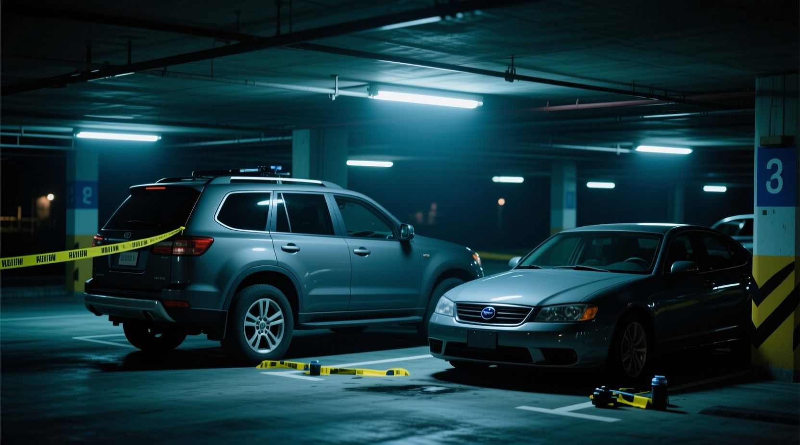
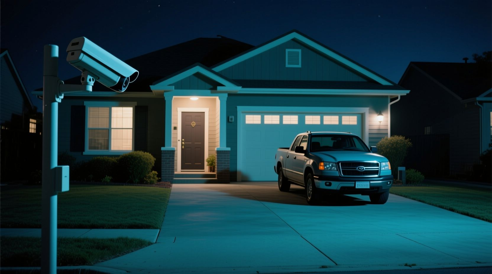

Built for dashcam footage
SentrySearch helps drivers, fleets, and Tesla owners search dashcam footage for the exact driving incidents that matter.
Natural language video incident search for dashcam and security teams
Search dashcam and security footage in natural language with a product built for fast incident review. SentrySearch automatically trims the matching clip so you can stop scrubbing through hours of video, describe what happened, surface the best matched clip, and export a short result that is ready to share with an insurer, operations lead, or security teammate.
SentrySearch helps drivers, fleets, and Tesla owners search dashcam footage for the exact driving incidents that matter.
SentrySearch supports security footage, driveway camera clips, porch views, and parking lot incident review when a normal timeline scrub is too slow.
SentrySearch does more than search. It helps produce a matched clip that can move straight into a report, handoff, or incident archive.
What is SentrySearch? It is a direct answer to video incident search.
SentrySearch is a focused term for natural language video incident search. In plain English, SentrySearch means you can ask for a moment in dashcam footage or security footage the same way you would ask a teammate: find the clip where a car cut in front of me, find the parking lot incident near the cart return, or find when someone walked up the driveway camera at night. SentrySearch translates that request into a practical workflow for incident review, ranking relevant moments and preparing a matched clip.
The reason SentrySearch matters is simple. Most teams still review dashcam footage and security footage by dragging a timeline and hoping they stop on the right second. SentrySearch makes that process feel more like search and less like manual footage hunting. That makes SentrySearch useful for solo drivers, fleet managers, homeowners, and operators who need a clip extraction workflow that feels clear, direct, and fast.
Teams adopt SentrySearch because incident review is rarely just one search. A manager might need the first approach, the moment of impact, and the recovery path. A driver might need a matched clip that shows a merge, a hard brake, or a red light dispute. A homeowner might need a driveway camera result that confirms timing, direction, and people involved. SentrySearch reduces those loops by making video incident search more conversational and by keeping the result anchored to the footage that matters.
SentrySearch also reads as a serious product, not a vague AI promise. The product goal is not to decorate a dashboard with buzzwords. The goal is to help someone open dashcam footage or security footage, type a natural request, review a matched clip, and complete clip extraction with enough confidence to act. For North American users, that maps directly to common workflows such as claims review, fleet safety follow-up, parking lot incident verification, visitor checks, and overnight property monitoring.
These are the kinds of requests that make SentrySearch feel obvious the first time you use it: Find the moment a car cut in front of me. Find when someone approached the driveway. Find the clip with a red truck near the stop sign.
Use SentrySearch to review cut-ins, sudden braking, lane merges, and road rage moments without replaying the whole drive.

SentrySearch helps isolate door dings, low-speed contact, suspicious walk-bys, and matched clip evidence from parked vehicle cameras.

Search security footage for package drops, visitor approach, vehicle arrival, or late-night motion around a driveway camera.
SentrySearch is especially strong when the main job is to search dashcam footage. The best dashcam workflow is rarely about watching everything. It is about narrowing the moment that matters. SentrySearch makes that possible with prompts that feel natural: find the truck that drifted into my lane, find the matched clip where the car ahead slammed on the brakes, find the driving incidents around the red light at 5:12 PM, or find the parking lot incident after I parked near the entrance. These are not abstract prompts. They are the language real users already use when they need evidence.
Because SentrySearch is framed around incident review, the output is more useful than a vague search result. A good SentrySearch result should show the matched clip, the camera source, the short time range, and whether the clip extraction is ready. That structure helps users move from search to action with less friction. For a North American audience, that matters because dashcam footage is often reviewed under time pressure, after stressful driving incidents, or during follow-up with insurance and fleet operations.
Search dashcam footage for the moment a car cut in front of me. Search dashcam footage for the matched clip where a gray SUV opened a door into my parked car. Search dashcam footage for the incident review around a freeway merge. Search dashcam footage for the parking lot incident near the cart corral. Search dashcam footage for the red truck by the stop sign. SentrySearch is meant to handle queries that look like this because that is how people naturally describe a video incident search problem.
SentrySearch also works when the footage source is not a vehicle. Security footage is full of moments that should be searchable but often are not. A driveway camera might catch a person approaching the gate. A porch camera might see a package drop. A garage camera might record a vehicle stopping for a few seconds and then leaving. SentrySearch turns those requests into a search workflow that is easier to explain to teammates and easier to repeat over time.
The value of SentrySearch for security footage is consistency. If you regularly inspect late-night events, unusual movement, or visitor checks, SentrySearch gives you one common language for video incident search across different cameras. That matters for a small business owner checking overnight security footage, for a property manager reviewing driveway camera footage after a report, and for a household that wants quick clip extraction without a full hosted upload flow. SentrySearch keeps the promise grounded: ask clearly, review quickly, save the matched clip, and move on.
Search security footage for someone approaching the driveway camera. Search security footage for the matched clip with a white van near the mailbox. Search security footage for a parking lot incident behind the building. Search security footage for the first person who walked across the lobby after midnight. SentrySearch fits these tasks because it is designed around plain language, incident review, and lightweight clip extraction instead of endless manual scrubbing.
SentrySearch prepares dashcam footage or security footage so search can happen on meaningful moments instead of raw file names.
Type what happened in natural language. SentrySearch ranks the likely event and identifies the matched clip for incident review.
Review the matched clip, confirm the camera and time range, and use SentrySearch to complete clip extraction for sharing or follow-up.
SentrySearch works because each step is aligned with how users already think about video. They remember events, not timestamps. They remember a parking lot incident, a door swing, a driveway camera approach, or a bad merge. SentrySearch gives those memories a direct path to the right footage.
This demo-only SentrySearch experience uses bundled example data and does not process live user footage or backend inference. The goal is to show how SentrySearch presents a matched clip, camera source, confidence, and clip extraction status during incident review.
Pick a real incident workflow, then edit the query below to see how the result set changes across cameras and clip extraction states.
If SentrySearch matches the way your team reviews dashcam footage, security footage, and driving incidents, start locally today and request the hosted roadmap when you are ready. Run SentrySearch locally when you want the full product story, and use Run locally today if you want the fastest path into the repo. Request a hosted demo when you want to discuss the SaaS version next.